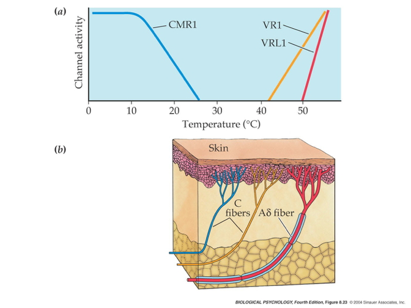

Topic 13 Sensory and motor systems
Sensory systems
My smartphone and me…

Figure 13.1: https://www.trustedreviews.com/wp-content/uploads/sites/54/2023/02/Samsung-Galaxy-S23-Ultra-hands-on-10.jpg
Smartphone design goals
- What information do your users need to acquire?
- Why do they need to know it? In what context, for what purpose?
- What types of information does your device need to gather, through which channels?
My turn…
- What information do I need to acquire?
- Why do I need to know it? In what context & for what purpose?
- What types of information do I need to gather, through which channels?

Somatosensation
- Sensations about the body
Types of somatosensation
- Internal (interoceptive)
- Where/how is my body positioned? How do I feel?
- Proprioception (perception of the self)
- External (exteroceptive)
- What’s in the world?
- Where is it?
Internal senses
- Kinesthesia
- Body position
- Movement
- Pain
- Vestibular sense
- Head position (relative to gravity)
- Head movement (rotation, translation)
Vesibulo-ocular response (VOR)

Figure 13.2: Vestibulo-ocular response (VOR): https://www.mcgill.ca/vestibular-gazecontrol-lab/files/vestibular-gazecontrol-lab/images/222_0.gif
- Keeps eyes steady when head moves
Figure 13.3: Castilla (2007)
- Can’t walk & text without it
Figure 13.4: Top Tens World (2017)
External senses
- What’s out there and where is it located?
- Cutaneous (receptors in the skin) senses
- Hot, cold
- Pressure
- Vibration
- Plus kinesthesia (why?)

- Receptors specialize in different info types, properties


Combined thermo (heat/cold) and chemo-receptors
- Taste dimension -> chemo receptor ≠ temperature dimension
- Why are minty foods cool?
- Why are spicy foods hot?
- Receptors that sense chemicals AND temperature

- Menthol/mint receptor (CMR1)
- Also signals “cool” temperatures
- Vanilloid Receptors (TrpV1/VR1, VRL1)
- Respond to capsaicin (in peppers), allyl isothiocyanate (in mustard, wasabi)
- Also signal “hot” temperatures

Figure 13.5: Scoville heat scale: https://www.savoryexperiments.com/wp-content/uploads/2020/12/Scoville-Heat-Scale-Savory-Experiments2.jpg
Size/speed trade-off
- Not all info travels at the same speed
- Thicker axons -> faster
- Myelinated axons -> faster

- Kinesthesia (from muscles and joints) the fastest
- Pain/itch slow
From skin to brain
- Cutaneous receptors ->
- Dorsal root ganglion in spinal cord ->
- Ventral posterior lateral thalamus ->
- Primary somatosensory cortex (S1) ->
- Post-central gyrus of parietal lobe


Functional segregation in spinal cord

Figure 13.6: http://teachmeanatomy.info/wp-content/uploads/Overview-of-the-Dorsal-Column-Medial-Lemniscal-Pathway-1.jpg

Figure 13.7: http://teachmeanatomy.info/wp-content/uploads/The-Spinothalamic-Tracts-Ascending-Sensory-1.jpg
- Separate pathways for different information types
- Dorsal column/medial leminiscal pathway
- Touch, proprioception
- Spinothalamic tract
- Pain, temperature
Somatatopic maps in thalamus & cerebral cortex

- Some areas of skin activate disproportionately size areas of the cerebral cortex

Figure 13.8: Somatosensory homunculus
- Smallest discriminable distance between two-points (two-point threshold) varies

- Occupational Therapists (OTs) measure this
Figure 13.9: OTGeddie (2017)
- S1 maintains functional segregation of input types

Summing up…somatosensory exteroception
- Perceiving Where
- Somatotopic maps – where on skin
- Kinesthesia – configuration of limbs
- Perceiving What
- Patterns of smoothness, roughness, shape, temperature

Somatosensory interoception
Interoception and emotion
Critchley, H. D. & Garfinkel, S. N. (2017). Interoception and emotion. Current Opinion in Psychology, 17, 7–14. https://doi.org/10.1016/j.copsyc.2017.04.020
: Fear and neutral faces are time-locked to distinct parts of the cardiac cycle to determine how cardiac afferent signals alter neural activity and intensity judgements (a). A cardiac cycle by emotion interaction demonstrated enhanced bilateral amygdala activation in response to fear faces at systole (b). Fear faces presented at systole were also judged as significantly more intense (c).](https://ars.els-cdn.com/content/image/1-s2.0-S2352250X17300106-gr1_lrg.jpg)
Figure 13.10: Figure 1 from Critchley and Garfinkel (2017): Fear and neutral faces are time-locked to distinct parts of the cardiac cycle to determine how cardiac afferent signals alter neural activity and intensity judgements (a). A cardiac cycle by emotion interaction demonstrated enhanced bilateral amygdala activation in response to fear faces at systole (b). Fear faces presented at systole were also judged as significantly more intense (c).
- Amygdala BOLD activity in response to fearful faces varies by cardiac phase
- Subjective ratings of felt fear vary with cardiac phase
Nummenmaa and Hari (2023)
Nummenmaa, L. & Hari, R. (2023). Bodily feelings and aesthetic experience of art. Cognition & Emotion, 1–14. https://doi.org/10.1080/02699931.2023.2183180.
Humans all around the world are drawn to creating and consuming art due to its capability to evoke emotions, but the mechanisms underlying art-evoked feelings remain poorly characterised. Here we show how embodiement contributes to emotions evoked by a large database of visual art pieces (n = 336). In four experiments, we mapped the subjective feeling space of art-evoked emotions (n = 244), quantified “bodily fingerprints” of these emotions (n = 615), and recorded the subjects’ interest annotations (n = 306) and eye movements (n = 21) while viewing the art. We show that art evokes a wide spectrum of feelings, and that the bodily fingerprints triggered by art are central to these feelings, especially in artworks where human figures are salient. Altogether these results support the model that bodily sensations are central to the aesthetic experience.
](https://www.tandfonline.com/na101/home/literatum/publisher/tandf/journals/content/pcem20/0/pcem20.ahead-of-print/02699931.2023.2183180/20230313/images/medium/pcem_a_2183180_f0001_oc.jpg)
Figure 13.11: Figure 1 from Nummenmaa and Hari (2023)
Phantom Limbs
Figure 13.12: cogmonaut (2010)
Pain
The neuroscience of pain
Nociceptors
- Nociceptors (Latin nocere to harm or hurt) detect harmful or potentially harmful stimuli of varied types:
- chemical
- mechanical
- thermal
- External
- Skin, cornea (eye), mucosa
- Internal
- Muscles, joints, bladder, gut
Projections to CNS
- Fast (\(A\delta\)) and slow (\(C\)) transmission to CNS
- Via anterolateral system
Figure 13.13: Anterolateral system from http://teachmeanatomy.info/wp-content/uploads/The-Spinothalamic-Tracts-Ascending-Sensory-1.jpg
](https://media.springernature.com/full/springer-static/image/art%3A10.1038%2Fnrn894/MediaObjects/41583_2002_Article_BFnrn894_Fig1_HTML.gif?as=webp)
Figure 13.14: Figure 1 from Craig (2002)
Key CNS nodes in network
- Periaqueductal grey (PAG) in midbrain
- Insular cortex (insula)
- Hypothalamus
- Amygdala
- Thalamus
- Ventroposterior lateral nucleus
- Ventroposterior medial nucleus
- Ventromedial nucleus

](https://media.springernature.com/lw685/springer-static/image/art%3A10.1038%2Fnrn894/MediaObjects/41583_2002_Article_BFnrn894_Fig2_HTML.gif?as=webp)
Figure 13.15: Figure 2 from Craig (2002)
Pain (perception/activation) in the brain
](http://www.nejm.org/na101/home/literatum/publisher/mms/journals/content/nejm/2013/nejm_2013.368.issue-15/nejmoa1204471/20170324/images/large/nejmoa1204471_f1.jpeg)
Figure 13.16: Figure 1 from Wager et al. (2013)
“…we used machine-learning analyses to identify a pattern of fMRI activity across brain regions — a neurologic signature — that was associated with heat-induced pain. The pattern included the thalamus, the posterior and anterior insulae, the secondary somatosensory cortex, the anterior cingulate cortex, the periaqueductal gray matter, and other areas…”
Pain relief
- Prostaglandins
- hormone-like effects, but released in many places
- trigger vasodilation and inflammation
- Paracetymol (acetaminophen)
- Mechanism not fully understood
- inhibits synthesis of prostaglandins via cyclooxygenase (COX) enzyme
- may modulate endocannabinoid system
- Nonsteroidal anti-inflamatory drugs (NSAIDs): aspirin, ibuprofen
- Also inhibit prostaglandins via COX
- Opioids
- Activate endogenous opioid systems
- multiple receptor types (\(\delta\), \(\kappa\), \(\mu\),…)
- peripheral sensory neurons, amygdala, hypothalamus, PAG, spinal cord, cortex, medulla, pons,…
- brainstem opioid neurons provide descending inhibition of nociceptors
](http://www.neurology.org/content/79/8/807/F1.large.jpg)
Figure 13.17: Figure 1 from Benarroch (2012)
- Synthetic Capsaicin
- Binds to TrpV1/VR1 thermo/nociceptors
- Eventually causes decrease in TrpV1 response
- Alters how peripheral neuron responds to mechanical (rubbing) stimulation
- Borbiro, Badheka, and Rohacs (2015)

- Why rubbing can help
Gate control theory (Melzack and Wall 1965)

By self - self-made in Inkscape, CC BY 3.0, Link

By self - self-made in Inkscape, CC BY-SA 3.0, Link
Psychological & physical components of pain
; A visual representation of some of the common and divergent aspects of psychological and physical pain discussed in this article. Following a parsimonious approach and for simplicity, social pain is considered here a special case of psychological pain. ACC, anterior cingulate cortex; HPA, hypothalamic-pituitary-adrenal axis; NMDA:,N-methyl-d-aspartate receptors; SNC, successive negative contrast.](https://ars.els-cdn.com/content/image/1-s2.0-S0149763414002978-gr1.jpg)
Figure 13.18: Figure 1 from Papini, Fuchs, and Torres (2015); A visual representation of some of the common and divergent aspects of psychological and physical pain discussed in this article. Following a parsimonious approach and for simplicity, social pain is considered here a special case of psychological pain. ACC, anterior cingulate cortex; HPA, hypothalamic-pituitary-adrenal axis; NMDA:,N-methyl-d-aspartate receptors; SNC, successive negative contrast.
Action
The neuroscience of action
- Nervous system “output” includes
- Movements
- Autonomic responses
- Endocrine responses
- What types of actions are there?
- Reflexes
- Simple, highly stereotyped, unlearned, rapid
- vs. Planned or voluntary actions
- Complex, flexible, acquired, slower
- Discrete (reaching) vs. rhythmic (walking)
- Ballistic (no feedback) vs. controlled (feedback)
- Reflexes
- How are these produced?
- By the muscles
- By the nervous system
Muscles

Types
- Smooth
- Arteries, hair follicles, uterus, intestines
- Regulated by ANS (involuntary)
- Cardiac
- Striated (striped)
- Skeletal
- Voluntary control, mostly connected to tendons and bones

How skeletal muscles contract
- Skeletal muscles have no “reverse” gear–they only contract
- Motoneuron (ventral horn of spinal cord)

- Neuromuscular junction
- Releases acetylcholine (ACh) onto skeletal muscle fiber
- Motor endplate
- Contains nicotinic ACh receptor
- Generates excitatory endplate potential (EPP)
- Muscle fiber depolarizes
- Depolarization spreads along fiber
- Causes release of Ca++ from stores inside muscle

Figure 13.20: http://www.siumed.edu/~dking2/ssb/images/NM040b.jpg
- Muscle fibers segmented into sarcomeres
- Myofibrils (w/in sarcomere)
- Paired actin & mysosin proteins
- “Molecular gears”
- Bind, move, unbind in presence of Ca++ plus energy source (ATP)

- Muscles often arranged in agonist/antagonist pairs


Muscles are sensory organs, too!


- Intrafusal fibers
- Sense length/tension
- Ennervated (contract) via gamma (\(\gamma\)) motor neuron activation
- Contain muscle spindles (sensory organs linked to Ia afferents)
- Extrafusal fibers
- Generate force
- Ennervated (contract) via alpha (\(\alpha\)) motor neurons
Monosynaptic stretch (myotatic) reflex
- Muscle stretched (length increases)
- Muscle spindle in intrafusal fiber activates
- Ia afferent sends signal to spinal cord
- Activates alpha (\(\alpha\)) motor neuron
- Muscle contracts, shortens length

- Gamma (\(\gamma\)) motor neuron fires to take up intrafusal fiber slack

Polysynaptic inhibition of antagonist muscle
Prevents/dampens tremor
Brain gets fast(est) sensory info from spindles


Disorders of movement
Parkinson’s Disease
- Symptoms
- Slow, absent movement, resting tremor
- Cognitive deficits, depression
- Biological correlates
- DA neurons in substantia nigra degenerate
- Autoimmune disorder? Garretti et al. (2019)
- Treatments
- DA agonists
- DA agonists linked to impulse control disorders in ~1/7 patients Ramirez-Zamora et al. (2016)
- Levodopa (L-Dopa), DA precursor
- Deep brain stimulation

Figure 13.22: https://mayfieldclinic.com/pe-dbs.htm
Huntington’s Disease

- Formerly Huntington’s Chorea
- “Chorea” from Greek for “dance”
- “Dance-like” pattern of involuntary movements
- Cognitive decline
- Genetic + environmental influences
- Gene fragment (CAG) duplication
- High levels of huntingtin protein accumulate in basal ganglia
- People with familial risk may want to consider genetic testing
- No effective treatment
- Promising gene therapy trial halted recently Kwon (2021)
Amyotrophic Lateral Sclerosis (ALS; Lou Gehrig’s Disease)

Figure 13.23: Stephen Hawking
- Most common motor neuron disease
- Most cases have no known cause
- No cure

Figure 13.24: Wikipedia: https://commons.wikimedia.org/wiki/File:UMN_vs_LMN.png#/media/File:UMN_vs_LMN.png
Vision
Background
Electromagnetic (EM) radiation

Wavelength or frequency
Intensity
Location/position of source
Reflects off some materials
Refracted (bent) moving through other materials
EM radiation provides information across space (and time)
Figure 13.26: Hubble Deep field from http://apod.nasa.gov/apod/ap140605.html
- Reflectance spectra differ by surface


Color == categories of wavelength
- Eyes categorize wavelength into relative intensities within specific wavelength bands
- RGB ~ Red, Green, Blue
- Long, medium, short wavelengths
- Humans have trichromatic vision – don’t perceive all wavelengths equally well
- Color is a neural/psychological construct
- Technologies based on trichromatic vision…
Optic array

Figure 13.29: Optic array
- Vision inextricably linked to action
- Action specifies geometry of environment (exteroception)
- Vision (resulting from action) specifies position/movement of body (interoception)


Parts of the eye
- Cornea - refraction (2/3 of total)
- Pupil - light intensity; diameter regulated by the Iris.
- Lens - refraction (remaining 1/3; variable focus)
- Retina - light detection
- ~ skin or organ of Corti
- Pigment epithelium - regenerate photopigment
- Muscles - move eye, reshape lens, change pupil diameter
Retina
- Eye forms image on retina
- Image inverted (up/down)
- Image reverseed (left/right)
- Point-to-point map (retinotopic)
- Binocular and monocular zones

- Eyes views overlap
- Different ‘halves’ of the retina project to different sides of the brain

- Information from right side of world (visual space) from both left and right eyes projects to left side of brain, and vice versa.

- Human field of view is front-facing
- Other animals differ

Fovea

Figure 13.30: The fovea from http://www.brainhq.com/sites/default/files/fovea.jpg
Central 1-2 deg of visual field
- ~ thumbnail @ arm’s length
Aligned with visual axis; center of gaze
Retinal ganglion cells pushed aside
Highest acuity vision == best for details
Acuity non-uniform across across the retina


Figure 13.31: Acuity across the retina from http://michaeldmann.net/pix_7/blndspot.gif
What part of the skin is like the fovea?
Photoreceptors
- Photoreceptors detect light

- Rods
- ~120 M/eye
- Mostly in periphery
- Active in low light conditions
- One wavelength range
- Cones
- ~5 M/eye
- Mostly in center
- 3 wavelength ranges
- Photoreceptors “specialize” in detecting particular wavelengths

Figure 13.32: Source: Anatomy & Physiology, Connexions Web site. http://cnx.org/content/col11496/1.6/, Jun 19, 2013
- Outer segment
- Membrane disks
- Photopigments
- Sense light
- Change conformation, trigger chemical cascade
- Inner segment
- Synaptic terminal
- Light hyperpolarizes photoreceptor!
- The dark current
Gilmore thinks that the retina is…
- Physiologically backwards
- Dark current (more NT released in dark)
- Anatomically inside-out
- Photoreceptors at back of eye
- Retina has layers

Figure 13.33: http://www.retinareference.com/anatomy/
Photoreceptors ->
Bipolar cells ->
Retinal ganglion cells ->
‘Cross-talk’
- Horizontal cells (photoreceptors <-> bipolar cells)
- Amacrine cells (bipolar cells <-> retinal ganglion cells)
Center-surround receptive fields
- Receptive field
- Property of a sensory neuron
- Region on (retina/skin) that a cell responds to
- Properties of stimulation

- Center region
- Excites (or inhibits)
- Surround region
- Does the opposite
- Bipolar cells & Retinal Ganglion cells ->
- Most activated by “donuts” of light/dark
- Local contrast (light/dark differences)
- Found in somatosensory system, too!
Opponent processing

Figure 13.34: http://www.visualexpert.com/sbfaqimages/RGBOpponent.gif
- Different types/groups of photoreceptor inputs “oppose” (inhibit) one another
- Black vs. white (achromatic)
- Long (red) vs. Medium (green) wavelength cones
- (Long + Medium) vs. Short (blue) cones
- Can’t really see reddish-green or bluish-yellow
From eye to brain

- Retinal ganglion cells project via
- 2nd/II cranial (optic) nerve
- Some cross at optic chiasm
- Hypothalamus
- Suprachiasmatic nucleus (SCN) of the hypothalamus
- Regulates circadian (day/night) rhythm via pineal gland
- Suprachiasmatic nucleus (SCN) of the hypothalamus

Figure 13.35: https://en.wikipedia.org/wiki/Retinohypothalamic_tract
- Superior colliculus & brainstem
Lateral Geniculate Nucleus (LGN) of thalamus
- ~90% of axons from retina

6 layers + intralaminar zone
- Parvocellular (small cells): chromatic
- Magnocellular (big cells): achromatic
- Koniocellular (chromatic - short wavelength?)
Retinotopic map of opposite (contralateral) visual field
From LGN to V1
Via optic radiations to
Primary visual cortex (V1) in occipital lobe
Human V1

Figure 13.36: Source http://www.scholarpedia.org/w/images/3/3a/03-Human-V1.png
- Primary visual cortex
- V1 has retinotopic map
](include/img/mri-v1-retinotopy.jpg)
Figure 13.37: Source Dougherty et al. (2003)
How the maps are measured via fMRI.
- Fovea overrepresented in map
- Analogous to somatosensation
- High acuity in fovea vs. lower outside it
- Upper visual field/lower (ventral) V1 and vice versa
V1 has laminar, columnar organization

- 6 laminae (layers)
- Input: Layer 4
- Output: Layers 2-3 (to cortex), 5 (to brainstem), 6 (to LGN)
- Columns
- Orientation/angle
- Spatial frequency

- Cells sensitive to line segments and orientations might detect object features

(#fig:v1-feature-detection, )http://www.scholarpedia.org/w/images/9/99/11-Hubel-Wiesel-model.png
- Or population of cells detects spatial frequency
](include/img/spatial-freq-fpsyg-03-00620-g003.jpg)
Figure 13.39: Low == gist || high == details; from Panichello, Cheung, and Bar (2013)
- V1 Columns
- Color/wavelength
- Eye of origin ->
- Cells that respond more to one eye vs. other show ocular dominance
- Ocular dominance signals retinal disparity

By I, Sbitzer, CC BY-SA 3.0, Link
Beyond V1

- Larger, more complex receptive fields
- Dorsal stream (where/how)
- Toward parietal lobe
- Ventral stream (what)
Motion processing
- Some areas respond to visual motion that has both where & what dimensions
https://www.biomotionlab.ca/html5-bml-walker/
- Brain responses to visual motion have prolonged developmental timecourse.
Figure 13.40: Child VEP data from Gilmore, Thomas, and Fesi (2016) Figure 4
Figure 13.41: Adult VEP data from Gilmore, Thomas, and Fesi (2016) Figure 21
- Perceptual sensitivity to motion also has prolonged developmental timecourse.
Figure 13.42: Figure 2 from Qian, Seisler, and Gilmore (2021)
Figure 13.43: Figure 2 from Qian, Seisler, and Gilmore (2021)
What is vision for?
- What is it? (form perception)
- Where is it? (space perception)
- How do I get from here to there (action control)
- What time (or time of year) is it?

{kind=link}
{kind=link}
{kind=link}
{kind=link}
{kind=link}
{kind=link}